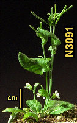

Nottingham Arabidopsis Stock Centre Update
Mary Anderson, Mike Arnold, Andy Lee and Karen Searle
Dept Life Science, Nottingham University, Nottingham, NG7 2RD, UK
Tel +44 115 9791216
Fax +44 115 9513251
email arabidopsis@nottingham.ac.uk
WWW server URL= http://nasc.nott.ac.uk/
New Stocks
The latest stocks to be released by the Centre are the T-DNA lines with mapped inserts from Mieke Van Lijsebettens, Universiteit Gent, Belgium (Van Lijsebettens et al., 1996. Mol. Gen. Genet. 251:365-372). These lines carry mapped insertions which cover four of the five chromosomes and are a useful resource for map based cloning and tageted tagging strategies.
NASC in collaboration with Georges Pelletier's group at INRA- Versailles, Andy Periera's group at CPRO-DLO Wageningen and Bernard Mulligan's group at the University of Nottingham have successfully obtained funds from the European Community, Framework IV Biotechnology Programme to bulk and distribute lines of biotechnological use to the research community. Over the next three years this will allow the distribution of a large population of lines from INRA, lines with multiple I-element inserts including approximately 100 mapped I-elements from Andy Pereira and deletion lines from Bernard Mulligan. The lines from INRA and CPRO-DLO will be a vital resource towards saturation mutagenesis and for structure/function analyses as the sequencing programme progresses. The deletion lines will aid fine mapping analyses and can be used as a resource to define regions of importance in chromosome structure and function.
New Mirror site goes on-line
Probably the biggest frustration now with access to the Internet is the sometimes slow speed of connection times and information downloading, particularly once you get move outside your home country. Some have even suggested that the World Wide Web should be re-named the World Wide Wait. To try and improve information access to UK and other European users we have started to mirror information which is only currently available through servers in the USA. As a start we now mirror the Arabidopsis EST data which has been developed by Ernie Retzel's group at the University of Minnesota as part of a joint project with Tom Newman at University of Michigan. In future we intend to expand this facility to include the rest of the EST work that is being conducted in Ernie Retzel's group.